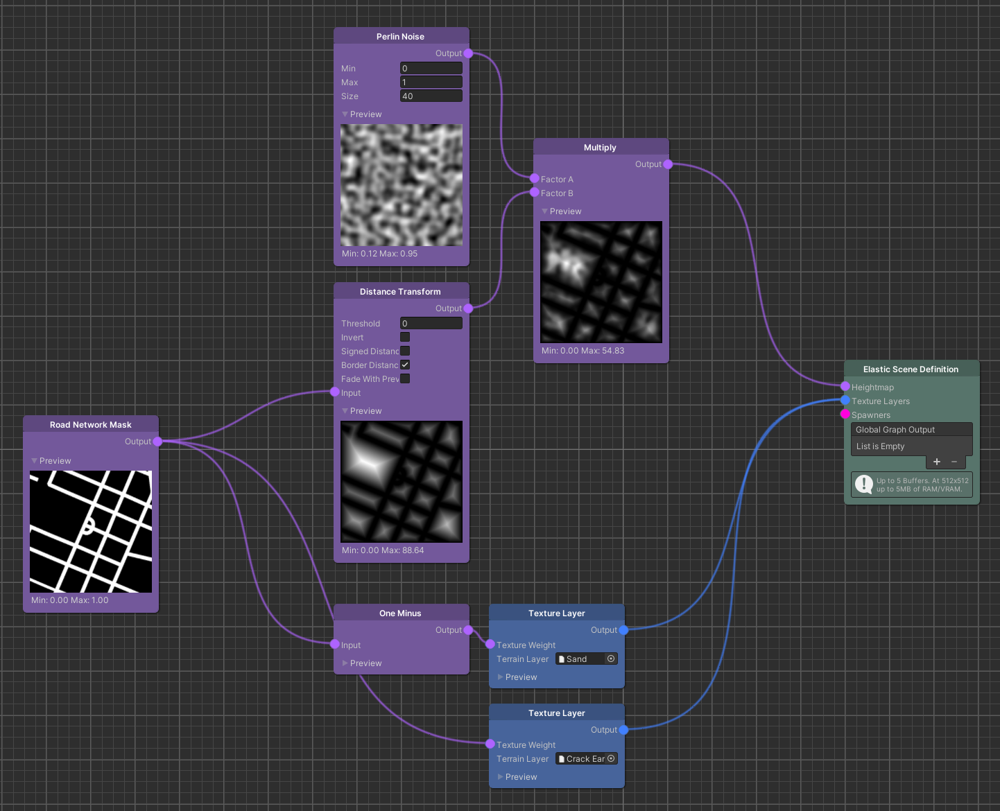

Perlin Noise
Overview
The Perlin Noise node generates a Map where each value represents a sample from a smooth, continuous gradient noise.
It is a good candidate to visual natural phenomena, like mountains.

Detailed Explanation
Technically speaking, the Perlin noise function computes amplitudes of a random but also smooth noise signal. The most important properties of this function are its smooth, interpolated values and its self-similarity which make it a good candidate to visual natural phenomena.
The value of each pixel on the resulting Map is a sampled amplitude from the continuous Perlin noise function. The noise signal is sampled along the vertical and horizontal coordinates of the Map. The coordinates represent a point in time of the noise signal. The frequency of the noise signal is defined as 1 / Size, while the Size parameter, in a scientific context, would be referred to as the period of the signal.
Tip
Use the Size parameter to adjust the frequency of the noise signal.
Effectively this will capture a broader area of the 2D Perlin noise function.
Note
The 2D noise output is seamlessly tileable.
Parameters
Controls
| Name | Type | Description |
|---|---|---|
| Min | float | The global minimum amplitude value of the generated noise signal. Local minimum values can be bigger. |
| Max | float | The global maximum amplitude value of the generated noise signal. Local maximum values can be smaller. |
| Size | float | The size of the perlin noise grid in meters. |
Use Cases
Shaping Terrain

This example shows how the Perlin Noise node can be multiplied with a Distance Transform node to generate a terrain that already provides a rather natural look.
Finding the right Min, Max and Size values for the Perlin noise, is essential to generate a variety of convincing procedural terrain shapes.